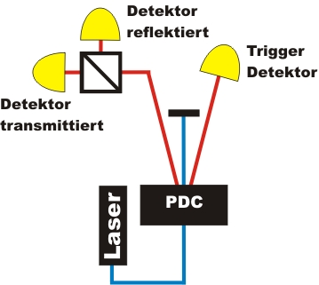
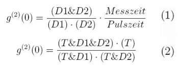

Existenz des Photons Kapitel 2:
Experiment mit kontinuierlicher Datenrate für die Universität
Im folgenden Experiment soll die Existenz des Photons als unteilbares Quantenobjekt mit kontinuierlicher Datenrate gezeigt werden. Als quantitative Größe zur Existenz des Photons wird die Korrelationsfunktion zweiter Ordnung [Fox06] eingeführt. Die Korrelationsfunktion kann im Experiment bei unterschiedlicher Laserleistung gemessen werden.
Zählraten am Strahlteiler
Im Experiment werden einzelne angekündigte Lichtportionen auf einen Strahlteiler geschickt (Abb. 1). Die Präparation der Lichtportionen erfolgt über die Koinzidenzmethode. Die Zählraten werden in Ereignisse pro Sekunde angezeigt. Was kann aus den Zählraten über einzelne Lichtportionen am Strahlteiler gesagt werden?

Abb. 1: Experiment zum Nachweis der Existenz des Photons
Beobachtung und Erklärung:
Die Zählrate aller Detektoren zusammen (Dreifachkoinzidenz: D1&D2&T) ist im Vergleich zu den Einzelzählraten (Zweifachkoinzidenz D1&T, D2&T) sehr gering. Einzelne Lichtportionen werden somit entweder transmittiert oder reflektiert. Eine elementare Lichtportion ist nicht mehr teilbar, sie ist gequantelt. Die einzelnen Quanten des Lichts werden als Photonen bezeichnet [Lew26]. Die wenigen Dreifachkoinzidenzen im Experiment sind keine Messfehler, sondern zwei einzelne Lichtquanten, die mit einer geringen Wahrscheinlichkeit im Kristall erzeugt werden.
Korrelationsfunktion zweiter Ordnung
Ein quantitativer Zugang zur Existenz des Photons als Quantenobjekt ist das Konzept zur Bündelung von Licht (Bunching). Mathematisch darstellbar ist die Bündelung bzw. Nichtbündelung (Antibunching) über die Korrelationsfunktion zweiter Ordnung g²(0). Für das Licht einer Glühlampe (thermisches Licht) ist die Funktion g²(0)=2. Für das Licht eines Lasers (kohärentes Licht) ist die Funktion g²(0)=1. Dies entspricht dem Wert für eine monochromatische elektromagnetische Welle. Erst wenn die Funktion g²(0)<1 ist, kann zur Erklärung nur noch die Quantennatur des Lichts genutzt werden. Eine gute Einführung zu dieser Funktion und die Diskussion der Bündelung von Licht bietet die Veröffentlichung von Beck [Bec07] oder Grundlagenbücher zur Quantenoptik [Fox06], [Lou73]. Die Formel für g²(0) ohne Trigger-Detektor (1) und mit Trigger-Detektor (2) lautet:

Im Experiment können beide Werte der Korrelationsfunktionen gleichzeitig gemessen werden. Führen Sie nun das Experiment durch. Variieren Sie die Leistung des blauen Lasers über die Wellenplatte. Die Leistung kann an der Wellenplatte nach der Laserquelle mit den zwei grauen Taster verändert werden. Was lässt sich mit dem Wert von g²(0) über die Art des Lichts sagen? Für die einzelnen Messergebnisse wurden jeweils 30 Messungen zu je 1 Minute aufgenommen.
Beobachtung und Erklärung:
Wird das Experiment mit dem Trigger-Detektor durchgeführt, so ist für alle Laserleistungen g²(0)<<1. Das Experiment ist somit nur noch über die Quantennnatur von Licht erklärbar. Bei der Laserleistung von 100yW wird die klassische Vorstellung von Licht als elektromagnetische Welle (g²(0)=1) um bis zu 1245 Standardabweichungen verletzt. Die Existenz des Photons als Quantisierung des Feldes ist somit bewiesen. Nichtklassisches Licht wird seit 1972 nachgewiesen [Cla72], [Kim77], [Gra86] und ist weiterhin Gegenstand moderner Experimente [Ure05]. Unser bester Messwert ist eine Verletzung der klassischen Vorstellung von Licht mit über 2470 Standardabweichungen.Wird das Experiment ohne den Trigger Detektor durchgeführt, so ist g²(0)=1. Das Licht bleibt klassisch, auch wenn die Laserleistung stark reduziert wird. Der Wert g²(0)=1 kann auch bei einem abgeschwächten Laser gemessen werden, weshalb mit einem abgeschwächten Laser keine einzelnen Photonen erzeugt werden können.
Im nächsten Kapitel wird der Unterschied zwischen klassischem und nichtklassischem Licht graphisch über die Photonenstatistik erläutert [klick].
Originaldaten aus dem Experiment: Kontinuierlich, Korrelationsfunktion g²(0)
Zum nächsten Kapitel: Photonenstatistik [klick]
Zurück zur Übersicht [klick]
Autor: P. Bronner, April 2008